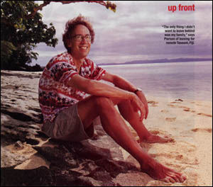

|
February 3, 2003
The Piersons: A Movie Honcho Moves His Family to Fiji

"The Only thing I didn't want to leave behind
was my family," says Pierson
of leaving for remote Taveuni, Fiji. |
If Jennifer Lopez ever washes up on the beaches of Taveuni, Fiji, she'll find she has fans. "Everyone here
loves J. Lo," says John Pierson, owner of the Meridian 180, the island's only movie theater. "But
no one knew what to make of Stuart Little 2. They called the hero 'the little talking rat.'"
That kind of audience response is precisely what lured Pierson, 48, to run a tiny theater (288
seats) on a small island (pop. 10,000) a long way (8,000 miles) from his former Garrison, N.Y.,
home.
A producer of independent films such as Clerks and The Blair Witch Project.
Pierson says he was suffering from a "spiritual crisis" after a decade in the biz. Then, in 1999,
he heard about Meridian 180 and flew out for a visit. At a Three Stooges screening, he was floored by
the locals' unjaded enthusiasm. "The love of that audience for the movie was reenergizing," he
says. Learning that the owner planned to shut down the theater, he decided to take it over.
Hollywood friends, including Kevin Smith and Spike Lee, agreed to finance the venture. (Pierson
won't mention the six-figure sum.) Last September he and his family - wife and business partner
Janet, 45; Georgia, 15; and son Wyatt, 12, moves to a $200-a-week villa in an abandoned resort.
"It was liberating," he says.
"Liberating for him, excruciating for me," says Janet, a homemaker, who is still adjusting to
the absence of pretzels, fresh coffee and hairdresser. The family is living off savings while
Pierson - who hopes to sell a book about his experience - serves as projectionist. (Nightly
admission is free.) The children attend local schools, which are taught in English, and Wyatt
is learning Fijian. "It's a parred-down life," says Janet. "Our days are full just being
together."
Written by: J.D. Heyman
Reported by: Kevin Airs, Theresa Crapanzano, Susan Gray Gose, Esther Leach, Laurie
Meyers, Vicki Sheff-Cahan and Jill Westfall
People - Facts & Fibs
Everyone wants their page in People. We were thrilled, then dismayed, and
are now somewhere in between.
It's too bad that after a four-hour pre-Fiji interview in LA in July, and
3 days in Taveuni with an Australian journalist in early October, the 3
measly paragraphs that were published contain 13 factual errors. For you
media trackers, here's the breakdown in sequence. "Facts" that were fact
checked but left uncorrected are marked with
- The theater is not called the "Meridian 180." It is
called the 180 Meridian Cinema.

- Even using movie screens in the US as a measuring
stick, 288 seats is not "tiny." It's not even small.
- John was not a "producer" of Clerks. He was a producer of Chasing Amy.
- John was not a "producer" of Blair Witch Project. He did contribute
$10,000 to the shooting budget.
- John has been in "the biz" for 25 years, not "a decade."
- John didn't fly out for a "visit." John flew out, with
crew and family, to make an episode of Split Screen,
our TV series on IFC. It was February, 2000, not
1999.
- Kevin, Spike (+ Matt Stone & the Blair Witch Gang) didn't exactly
"finance" the
venture. That would imply an investment which will
recoup their money or return a profit. They DONATED
the money to back John's dream. (And why waste space in a
short article with the line "Pierson won't name the
six figure sum"?)
- We left on August 3rd, not in September.
- We live in an old, wooden plantation house, not a "villa"
by any definition that we know. The "abandoned resort,"
Taveuni Estates, is more of a development with lots
for houses, and it's still alive, if not well. Our home is the original
building on the vast
property. The important point would be that the
twice-bankrupt development was an extremely
incongruous project for Taveuni.
- "Excruciating" for Janet? People admits it's a quote from July 26th,
a week before we left and six months before publication, about the
grueling process of packing up the house in New York. It had nothing to
do with life in Fiji. (Please read Janet's "The First Two Months" on the
homepage written the same week that People's reporter visited.)
- "Homemaker" is not what we'd call Janet, nor is it what People called
her two sentences earlier. She is in fact a "business partner" - for 15
years, 20 films, 66 episodes of a tv series, and 1 book.
- Family is not "living off savings" yet due to the largesse of those
in #7.
- John does not "serve as projectionist." One of the
fantastic events that Kevin Airs, the Australian writer, eyewitnessed
when he
visited only happened because John would never trust
himself to operate that projection booth.
Georgia also swears that she's learned more Fijian than Wyatt. Despite
her claims to the contrary, it's a nice photo of John. And in the end,
that's what People's all about.
Incidentally, that beach was badly damaged, as was all of Taveuni except
for our villa and the Meridian 180, by a ferocious South Pacific hurricane
called Cyclone Ami which made a direct hit January 14th 2003, literally
four days before People closed this issue. That latest drama didn't seem
to fit into People's "paradise can be oh so excruciating" agenda although
we pleaded with them to help raise public awareness.

|


{kind=link}